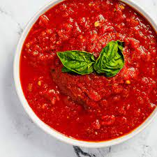

Sugo di Pomodoro(Authentic Italian Tomatoe Sauce

Description
This is a basic sugo recipe for traditional Italian tomato sauce flavored with extra-virgin olive oil, garlic, and basil. Toss with your favorite pasta or use for pizza, gnocchi, and more.
Ingrediants
- 2 tablespoons extra virgin olive oil
- 1 onion,chopped
- 4 cloves garlic, halved
- 2 (14 ounce) cans passata(crushed tomatoes)
- 1/4 cup fresh basil, torn in half
- salt to taste
Steps
- Heat oil in a saucepan over low heat.
- Add onion and garlic. Cook and stir until soft and translucent, about 5 minutes.
- Add passata, basil, and salt. Cover and simmer over medium heat, stirring occasionally, until tomato sauce has thickened, about 20 minutes.
- Remove garlic halves before serving.